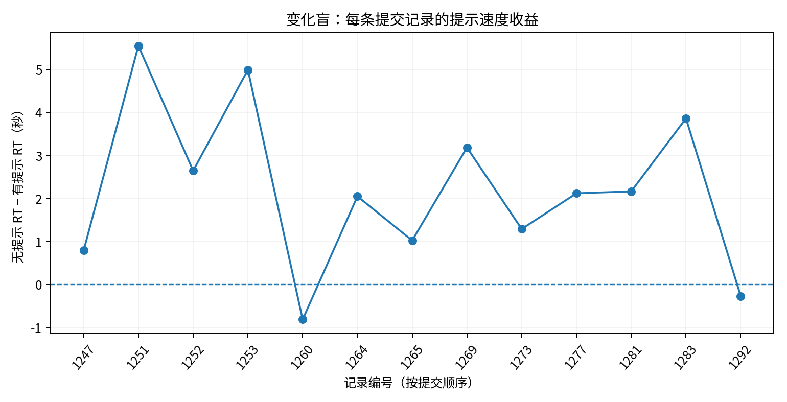
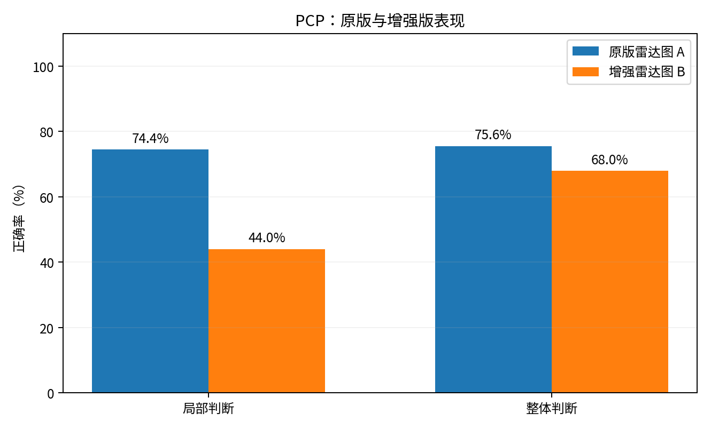
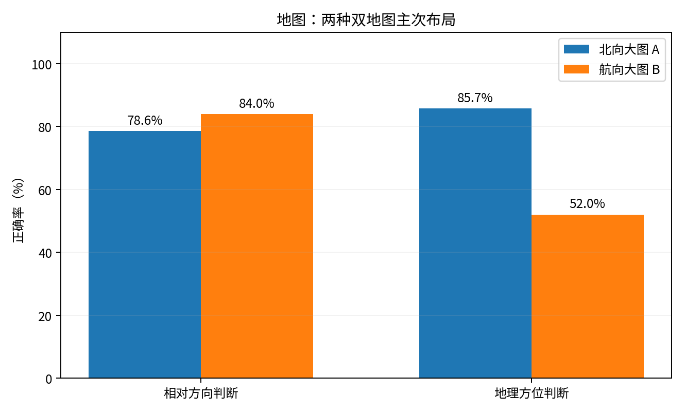

课程工程心理学作业二 · 项目码758X3E · 依据2026-11-09导出的CSV与JSON重新计算
test_ 记录（1248、1273、1276、1280、1281）按真实作答纳入分析；WorkBuddy在22:08—22:09生成的3条测试（1233—1235）排除。匿名编号存在误填/重复，重复提交均保留用于描述性分析；提交次数不等于独立被试人数，统计推断须谨慎。| 条件 | 正确率 | 正确试次平均反应时 |
|---|---|---|
| 有效物体类别提示 | 88.5% | 2,559 ms |
| 无提示 | 90.0% | 4,755 ms |
有提示平均快约 2.20秒，正确率没有提高。支持提示加快变化检测的事前预测，不支持正确率提高的预测。

| 任务 | 原版雷达图 A | 增强雷达图 B |
|---|---|---|
| 局部判断正确率 | 74.4% | 44.0% |
| 整体判断正确率 | 75.6% | 68.0% |
新增颜色/标注的增强雷达图未出现预期的局部判断收益，反而表现较差。实际A/B记录数为9/5，结论需考虑组间不平衡。

| 任务 | 北向上主图 A | 航向上主图 B |
|---|---|---|
| 相对方向判断正确率 | 78.6% | 84.0% |
| 世界中心方位判断正确率 | 85.7% | 52.0% |
航向上主图在相对方向任务中稍占优势；北向上主图在世界中心方位判断中有明显优势趋势。两组提交数量7/5，不能断言布局优势对所有人都成立。

上述均为实际收数的探索性结果。部分重复编号可能是同一人多次作答，也可能由编号误填导致，不能据此确定独立样本量；8条记录眼动质量低，行为反应仍纳入，但不能将其注视数据作为可靠眼动证据。原创刺激与原文任务不同，结论以效应方向比较为主。
参考文献：Rensink et al. (1997)、Wickens & Andre (1990)、Tlauka et al. (2000)。
完整统计口径与个体记录审计见仓库 数据分析报告。